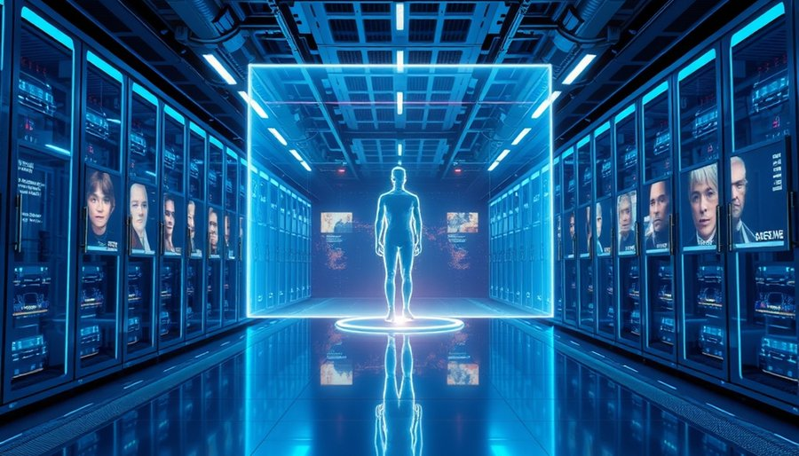

重生题材的爽感是明摆着的。被亏欠的人回到命运的岔路口，这一次选对，这一次报复，这一次把失去的全部拿回来。这种爽感在传统影视里也不少见，从早年的《回到未来》到近年的《财阀家的小儿子》，重生一直是高收视的配方。但传统影视的重生比例，从来没有高到十部占六七部的地步。长视频平台的重生题材占比很少超过一成，AI短剧平台却常常过半。这个数字跳跃，单靠观众口味解释不了。观众需求是必要条件，但不是充分条件。AI短剧的内容选择，首先是被生成模型的强项和弱项锁定的。
AI视频生成目前最擅长什么？静态场景的一致性重现。一间客厅，从不同角度拍十遍，AI能保持沙发、窗帘、光影高度统一。它最不擅长什么？新场景的快速构建、新人物的稳定塑造、连续动作的物理合理性。重生题材恰好把强项全部用上，把弱项全部规避。同一个场景反复出现：主角重生的那个卧室、谈判的那间会议室、打脸的那场宴会。AI只需要在第一次生成时投入算力，后续像套用模板一样反复调用，成本急剧下降。多数都市重生剧的核心场景只有五个左右：家、公司、餐厅、医院、法院。生成这五个场景的初始成本是固定的，之后每一集都在这些场景里反复切换，边际成本趋近于零。相比之下，玄幻剧每一场打斗都可能需要全新的特效场景，成本是重生剧的三到五倍。信息差又是成本最低的金手指。玄幻剧需要构建功法体系，系统文需要设计升级规则，重生剧只需要一句话：‘他知道未来会发生什么。’ 所有冲突从这句话里自动生长，无需额外设定成本。更深一层，重生题材和AI大模型的生成机制是同构的。AI生成内容，就是给定初始条件，用不同随机种子跑出不同结果。同样的提示词，seed不同，画面就不同。AI短剧就是同一个世界的多次采样。重生题材把这个采样机制直接写成了叙事主题：同一个主角，同一个起点，不同选择，不同结局。工具逻辑与故事内容互为镜像。当AI成为内容生产的主力，它最擅长的操作——重跑，分支，采样——就自然变成了最流行的故事类型。

生产端解释了为什么AI爱拍重生。观众端解释为什么观众爱看。这两端不是独立的，它们互为锁扣。当代人越来越强烈地感到，人生被少数几个关键决策锁定，且不可回滚。高考志愿。第一份工作。买房时机。跳槽窗口。风口赛道。错过任何一个，都像在个人资产负债表上记了一笔亏损。过去十年，中国楼市、互联网创业、加密货币，每一波浪潮都制造了一大批我本可以的人。他们没有做错什么，只是晚了一步。这种情绪在社交媒体上被反复咀嚼，在深夜被反复回味。重生短剧就是为这种情绪定制的消费品。它把时间变成可重拨的本金：遗憾是亏损，重生是资本重拨，复仇是止损。报复不公的题材则是私力救济的想象补偿。现实中维权的成本、延迟与不确定性，在短剧里被压缩成三秒复仇。它和躺平是同一个心理的两面。观众已经不信努力有用了。他们信的是再来一次。这个信念本身，说明他们对现有这一次人生的信用已经破产。更深层看，这是投资逻辑对人生叙事的殖民。当社会变化快到错过成为常态情绪，我本可以就成了这个时代的标准句式。重生短剧卖的不是再来一次的幻想。它卖的是我本可以的伤口。前者是爽感，后者是刚需。观众在评论区写‘要是我也能重来一次就好了’，他们买的不是故事，是自己人生的另一种采样。平台和AI把这个采样做成了流水线。
有人会说，重生题材在AI出现之前就泛滥了。网文里重生文占了半壁江山，长剧里重生改编也接连不断。这个观察没有错，但它忽略了一个关键差异：传统重生题材的形态是多样的，有系统流，有修仙重生，有历史穿越，场景和设定跨度极大。AI短剧里的重生，却高度集中在现代都市，家庭伦理，职场复仇这几个场景重复、动作简单的类型上。这不是偶然。这几个类型恰好是AI生成成本最低的赛道。场景可以复用，动作以对话和表情为主，不需要复杂特效。AI短剧里的重生潮，就是成本结构筛选特定子类型的结果。另一个替代解释是算法推荐。平台算法看到重生剧的完播率高，就加大推荐，制造了重生泛滥的表象。算法确实在放大，但算法的原料是内容供给。为什么重生剧的供给量一开始就大？因为生产成本低，制作方愿意批量生产。供给端的成本优势是初始推动力，算法只是加速了飞轮。算法推荐不是独立变量。它的训练数据来自用户行为，用户行为被内容供给塑造。当重生剧的供给量是其他题材的五倍，用户自然看重生剧更多，算法自然推重生剧更多。这是一个供给驱动的循环。这个机制的边界也很清楚：它适用于当前AI生成能力阶段。如果未来AI能低成本生成任意场景、连续动作和复杂特效，题材可能会扩散。但即使技术升级，成本结构仍然会塑造内容面貌，只是优势区可能从重生转移到下一个AI最擅长的题材。工具逻辑决定内容逻辑，这条规律不会因为技术升级而消失。我们刷到的下一部重生短剧，就是一套算力系统的自画像。
尾声
AI短剧平台正在变成我本可以的交易所。每一部重生剧，都是一份用算力发行的后悔期权。
小汪老师的成长观察笔记